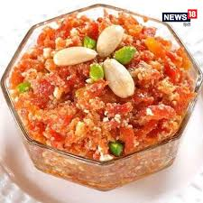

DESCRIPTION
Gajar ka halwa, also known as Gajorer halwa, Gajarno halwo, Gajrela, Gajar pak, and carrot pudding, is a sweet Indian dessert made by placing grated carrots in a pot containing a specific amount of water, milk, sugar, and cardamom and then cooking while stirring regularly.
Ingredients
Steps
- Prepare the carrots: Wash, peel, and grate the carrots. You can use a hand grater or a food processor.
- Cook the carrots in milk: In a heavy-bottomed pan, add the grated carrots and milk. Bring the mixture to a boil, then reduce the heat to low and let it simmer, stirring occasionally, until the carrots are tender and the milk has reduced considerably. This will take about 20-30 minutes.
- Add sugar and ghee: Once the milk has almost evaporated, add the sugar and ghee. Stir well and continue to cook on low heat until the sugar dissolves and the mixture thickens. This will take another 15-20 minutes.
- Add nuts and cardamom: Add the chopped nuts and cardamom powder. Mix well and cook for another 2-3 minutes until the halwa starts to leave the sides of the pan.
- Garnish and serve: Transfer the halwa to a serving dish and garnish with more chopped nuts. Serve hot or warm.
Back